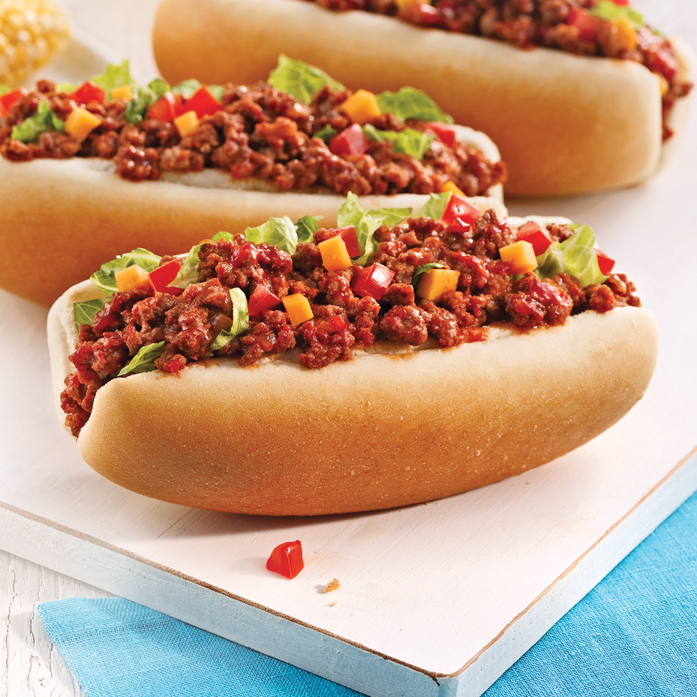

Sloppy Joe

Description
This is an easy and fast recipe for busy week days. Everyone will love it.
Ingredients
- 1 diced onion
- 450g of minced beef
- 160ml of ketchup
- 125ml of chili sauce
- 14ml of Worcestershire sauce
- 15ml of tomatoes paste
- 8 hots-dogs buns
Facultative ingredients for the garniture :
- 500ml of lettuce
- 1 diced tomato
- 125ml of diced cheddar cheese
Steps
- In a pan, heat oil. Cook the onion for about 1 minute.
- Add the beed et cook for 4 to 5 minutes until the pinkness is gone.
- Add ketchup, chili sauce, Worcestershire sauce and tomato paste. Add salt and pepper. Cook for 10 to 12 minutes.
- Add the preparation into the hot-dog buns and add lettuce, tomatoes and cheese if desired.
Back to main menu